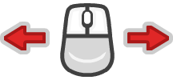
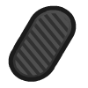
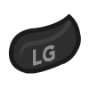
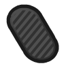

Sommaire
Utilisation
Si c’est la première fois que vous jouez, nous vous conseillons de suivre les étapes suivantes (le jeu est pour l’instant dépourvu de tutoriaux internes) :
Tout d’abord lancez le jeu.
Paramétrage spécifique à la réalité virtuelle :
Ensuite prenez le temps de paramétrer ce qui doit l’être pour jouer dans les meilleures conditions possibles.
Si vous souhaitez jouer en réalité virtuelle, il faut modifier les paramètres dans les options. Cochez la croix ‘Play in VR mode’ pour activer l’affichage en réalité virtuelle. Cette option restera activée au prochain lancement du jeu.
A noter que si vous souhaitez rejoindre une partie multijoueur, il est pour l’instant nécessaire de désactiver l’affichage en réalité virtuelle dans le menu le temps de saisir l’adresse I.P. de votre hôte, puis de le réactiver avant de lancer la partie. Ce point devrait être corrigé d’ici la sortie du jeu.
Nous vous conseillons pour une première partie de tester le mode déplacement par défaut qui est celui autour duquel le jeu est équilibré. Néanmoins si après quelques minutes vous le trouvez toujours trop déstabilisant n’hésitez pas à tester le mode de déplacement en case par case (qui évoluera probablement d’ici la sortie du jeu).
Par défaut les rotations s’effectuent par crans de 45°. Si vous n’avez pas l’habitude, il est naturel d’avoir besoin de quelques minutes pour ne plus être désorienté. Il est possible de modifier cette valeur voire de passer sur la rotation libre traditionnelle des jeu de tir à la première personne sur écran standard (à priori insupportable pour la majorité des gens, mais personne ne vous jugera).
Fin de la section sur le paramétrage spécifique à la réalité virtuelle :
Sélectionnez le bouton ‘New game’ pour démarrer une partie.
Si vous voulez jouer à plusieurs vous pouvez sortir de la pièce et vous attendre dans le sas d’entrée devant la porte du donjon.
A partir de là il faut suivre la traînée de lumière au sol sans vous faire tuer par les monstres. Attention les monstres ne vous lâcheront pas ! Il est conseillé de les éliminer au fur et à mesure pour ne pas se faire déborder.
Vous finirez par arriver dans une grande salle dont la sortie est fermée. Une fois tous les joueurs entrés, le combat contre le boss se déclenche. Une fois celui-ci mort vous pourrez quitter la pièce et accéder à la fin temporaire du jeu.
Félicitations vous avez terminé la version de démonstration :).
Combat
Note : Lors de la sortie du jeu, il existera quatre spécialisations de combats différentes, toutes ayant leurs propres particularités.
En attendant vous êtes invités à jouer un mage un peu plus générique qui possède les capacités suivantes :
Attaque principale :
Maintenir enfoncé le bouton de l’attaque principale permet de tirer en continu et inflige des dégâts aux cibles atteintes. L’attaque principale n’affecte pas la réserve d’energie du mage mais ralentit ses déplacements.
Attaque secondaire (ralentissement):
Cette technique permet de ralentir les déplacement de la cible. Maintenez la touche enfoncée pour charger l’attaque puis relâchez pour lancer le projectile. Relâcher trop tôt fait échouer l’attaque.
Téléportation :
Cette technique permet au joueur de se téléporter de 12m dans la direction de son regard. Elle permet d’éviter la plupart des attaques et de traverser les monstres et joueurs sur le chemin. Attention : il est impossible de se téléporter à travers les murs physiques ou magiques.
Attaque assomante :
Cette technique nécessite d’être proche de(s) cible(s) : après 2 secondes de canalisation une explosion centrée sur le mage a lieu et assome tous les ennemis proches, interrompant leur technique en cours.
Proposition de stratégie (contient de légers spoilers) :
Les contrôles du personnage sont relativement simples. Cependant les déplacement rapides et les téléportations peuvent être un peu déroutantes en réalité virtuelle au début. Le but du jeu est de se maintenir à distance raisonnable des adversaires pour ne pas se faire toucher tout en leurs tirant dessus.
Les dégâts des joueurs individuels sont relativement faibles. Il est donc important de se coordonner au sujet des cibles.
L’énergie servant à la fois à se déplacer plus vite, à ralentir et à interrompre les ennemis, il est important de se coordonner entre les joueurs pour l’utiliser le plus efficacement possible. Il est fortement conseillé de toujours garder assez d’énergie pour être capable d’éviter une attaque en se téléportant.
Actuellement seuls les nécromanciens (les squelettes volants en robe) nécessitent vraiment d’être assommés pendant qu’ils essayent de jeter un sort et ainsi éviter d’être submergés par les invocations des fantômes bleus.
Les ralentissements sont nécessaires sur certains ennemis et confortables sur la plupart des autres mais coûtent cher en énergie. Il est important de se coordonner pour éviter d’être plusieurs à ralentir le même ennemi.
Liste des commandes
| Fonction | Clavier Souris | Manette Xbox360 | Oculus Touch | VIVE Wand |
|---|---|---|---|---|
| Avancer |  |
 |
||
| Reculer |  |
|
||
| Pas latéral gauche |  |
|
||
| Pas latéral droit |  |
|
||
| Rotation vue vers la gauche |  |  |
||
| Rotation vue vers la droite | |
|||
| Ouvrir le menu d’options |  |
 |
||
| Attaque principale |  |
 |
||
| Attaque secondaire |  |
 |
 | |
| Téléportation en avant |  |
 |
||
| Explosion assomante |  |
 |
 |  |
Jeu en groupe
Il est possible et même conseillé de jouer à Wardens of the Amber Cage à plusieurs. Pour cela il faut que l’un des joueurs héberge une partie (il n’y a actuellement pas de serveur de jeu officiel) et jusqu’à 3 joueurs pourrons le rejoindre (le nombre de joueurs maximum n’est pas encore définitivement fixé). Afin que le jeu reste jouable quel que soit le nombre de joueurs, le coût en énergie des sorts et leurs dégâts dépendent du nombre de joueurs connectés.
Héberger une nouvelle partie :
Le joueur souhaitant héberger une partie doit pouvoir être joint sur le réseau via le port 7777 (c’est celui par défaut du multijoueur dans le moteur Unity, il sera peut-être changé ou en tout cas personnalisable plus tard). Pour cela il doit ouvrir le port 7777 de sa machine. Si la machine est située derrière un routeur (comme une box de fournisseur d’accès par exemple) il faudra probablement procéder à un paramétrage de celui-ci. Ce paramétrage consiste à opérer une Network Address Translation du port 7777 de son adresse sur le réseau vers le port 7777 de sa machine.
Note : Le détail de cette démarche pouvant dépendre de beaucoup de facteurs nous sommes obligés de vous laisser le soin de rechercher les détails de la manipulation en fonction des systèmes d’exploitation, des routeurs intermédiaires, des logiciels antivirus et des pare-feux.
Il suffit ensuite de choisir l’option du menu ‘New Game’.
Pour l’instant il n’y a pas de messages annonçant la connexion des joueurs. Il faut donc s’attendre dans le hall d’entrée juste après la petite pièce où vous apparaissez.
Rejoindre une partie en cours :
Pour rejoindre une partie hébergée il faut saisir dans le champ ‘Server adress’ à coté du bouton ‘Join Game’ l’adresse I.P. de l’hôte. Il est possible de connaître son adresse I.P. publique de différentes manières. Une manière simple est de consulter la page IP Chicken. Il n’est pour l’instant pas possible pour le client de ‘viser’ un autre port que le 7777 pour se connecter à un serveur.
On sélectionne ensuite le bouton ‘Join Game’ et si la connexion peut s’établir, la partie commence. En cas d’échec vous resterez sur le menu d’accueil après un effet visuel. Vérifier que la partie est bien lancée chez l’hôte, que son adresse I.P. V4 est la bonne (elle peut changer de temps en temps en fonction de votre fournisseur d’accès à Internet), que ses ports sont ouverts et que vos antivirus/pare-feux ne bloquent pas les connexions entrantes/sortantes sur le port TCP 7777.
Note : la connexion échouera si l’hôte n’a pas déjà lancée la partie.